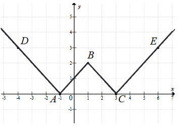

Matura 2019 maj PR
Dla dowolnych liczb \(x\gt 0,\ x\ne 1,\ y\gt 0,\ y\ne 1\) wartość wyrażenia
\(\left(\log_{\frac{1}{x}}y\right)\cdot \left(\log_{\frac{1}{y}}x\right)\) jest równa
A.\( x\cdot y \)
B.\( \frac{1}{x\cdot y} \)
C.\( -1 \)
D.\( 1 \)
D
Liczba \(\cos^{2}105^\circ -\sin^{2} 105^\circ \) jest równa
A.\( -\frac{\sqrt{3}}{2} \)
B.\( -\frac{1}{2} \)
C.\( \frac{1}{2} \)
D.\( \frac{\sqrt{3}}{2} \)
A
Na rysunku przedstawiono fragment wykresu funkcji \(y = f(x)\), który jest złożony
z dwóch półprostych \(AD\) i \(CE\) oraz dwóch odcinków \(AB\) i \(BC\), gdzie \(A = (-1, 0)\), \(B
= (1, 2)\), \(C = (3, 0)\), \(D = (-4, 3)\), \(E = (6, 3)\).  Wzór funkcji \(f\) to
A.\( f(x) = |x + 1| + |x - 1| \)
B.\( f(x) = ||x - 1| - 2| \)
C.\( f(x) = ||x - 1| + 2| \)
D.\( f(x) = |x - 1| + 2 \)
\(f(x) = ||x - 1| - 2|\)
Zdarzenia losowe \(A\) i \(B\) zawarte w \(\Omega\) są takie, że prawdopodobieństwo
\(P(B')\) zdarzenia \(B'\), przeciwnego do zdarzenia \(B\), jest równe \(\frac{1}{4}\). Ponadto
prawdopodobieństwo warunkowe \(P(A|B) = \frac{1}{5}\). Wynika stąd, że
A.\( P(A\cap B) = \frac{1}{20} \)
B.\( P(A\cap B) = \frac{4}{15} \)
C.\( P(A\cap B) = \frac{3}{20} \)
D.\( P(A\cap B) = \frac{4}{5} \)
\(P(A\cap B) = \frac{3}{20}\)
Oblicz granicę \(\lim_{n \to \infty} \Biggl( \frac{9n^3 + 11n^2}{7n^3 + 5n^2 + 3n +
1} - \frac{n^2}{3n^2 + 1}\Biggl)\)
Wpisz w poniższe kratki – od lewej do
prawej – trzy kolejne cyfry po przecinku rozwinięcia dziesiętnego otrzymanego wyniku.
\(952\)
Rozważamy wszystkie liczby naturalne pięciocyfrowe zapisane przy użyciu cyfr \(1\),
\(3\), \(5\), \(7\), \(9\), bez powtarzania jakiejkolwiek cyfry. Oblicz sumę wszystkich takich
liczb.
\(6\ 666\ 600\)
Punkt \(P = (10, 2429)\) leży na paraboli o równaniu \(y = 2x^2 + x + 2219\).
Prosta o równaniu kierunkowym \(y = ax + b\) jest styczna do tej paraboli w punkcie \(P\). Oblicz
współczynnik \(b\).
\(b = 2019\)
Udowodnij, że dla dowolnych dodatnich liczb rzeczywistych \(x\) i \(y\), takich że
\(x \lt y\), i dowolnej dodatniej liczby rzeczywistej \(a\), prawdziwa jest nierówność \(\frac{x +
a}{y + a} + \frac{y}{x} \gt 2\).
Dany jest trójkąt równoramienny \(ABC\), w którym \(|AC| = |BC|\). Na ramieniu
\(AC\) tego trójkąta wybrano punkt \(M (M \ne A\) i \(M \ne C)\), a na ramieniu \(BC\) wybrano punkt
\(N\), w taki sposób, że \(|AM| = |CN|\). Przez punkty \(M\) i \(N\) poprowadzono proste prostopadłe
do podstawy \(AB\) tego trójkąta, które wyznaczają na niej punkty \(S\) i \(T\). Udowodnij, że
\(|ST| = \frac{1}{2}|AB|\).
Punkt \(D\) leży na boku \(AB\) trójkąta \(ABC\) oraz \(|AC| = 16\), \(|AD| = 6\),
\(|CD| = 14\) i \(|BC| = |BD|\). Oblicz obwód trójkąta \(ABC\).
\(Obw = 120\)
Dane są okręgi o równaniach \(x^2 + y^2 - 12x - 8y + 43 = 0\) i \(x^2 + y^2 - 2ax +
4y + a^2 - 77 = 0\). Wyznacz wszystkie wartości parametru \(a\), dla których te okręgi mają
dokładnie jeden punkt wspólny. Rozważ wszystkie przypadki.
\(a \in \{6 - 6\sqrt{3}, 6, 6 + 6\sqrt{3}\}\)
Trzywyrazowy ciąg \((a, b, c)\) o wyrazach dodatnich jest arytmetyczny, natomiast
ciąg \(\Biggl(\frac{1}{a}, \frac{2}{3b}, \frac{1}{2a + 2b + c}\Biggl)\) jest geometryczny. Oblicz
iloraz ciągu geometrycznego.
\(q = \frac{1}{3}\)
Wielomian określony wzorem \(W(x) = 2x^3 + (m^3 + 2)x^2 - 11x - 2(2m + 1)\) jest
podzielny przez dwumian \((x - 2)\) oraz przy dzieleniu przez dwumian \((x + 1)\) daje resztę \(6\).
Oblicz \(m\) i dla wyznaczonej wartości \(m\) rozwiąż nierówność \(W(x) \le 0\).
\(x \in (-\infty, -3\bigl] \cup \biggl[-\frac{1}{2}, 2\biggl]\)
Rozwiąż równanie \((\cos x) \Biggl[ \sin \biggl(x - \frac{\pi}{3} \biggl) + \sin
\biggl(x + \frac{\pi}{3} \biggl)\Biggl] = \frac{1}{2}\sin x\).
\(x \in \biggl\{-\frac{\pi}{3} + 2k\pi, k\pi, \frac{\pi}{3} +
2k\pi\biggl\}\)
Rozważmy wszystkie graniastosłupy prawidłowe trójkątne o objętości \(V = 2\).
Wyznacz długości krawędzi tego z rozważanych graniastosłupów, którego pole powierzchni całkowitej
jest najmniejsze. Oblicz to najmniejsze pole.
\(P = 6\sqrt{3}\)